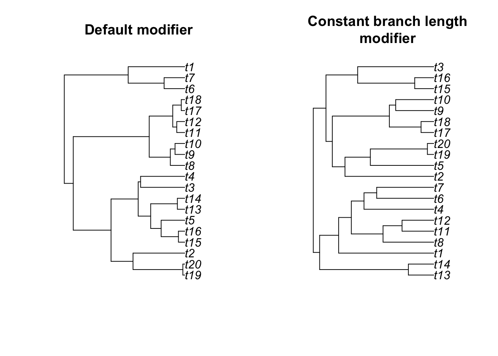
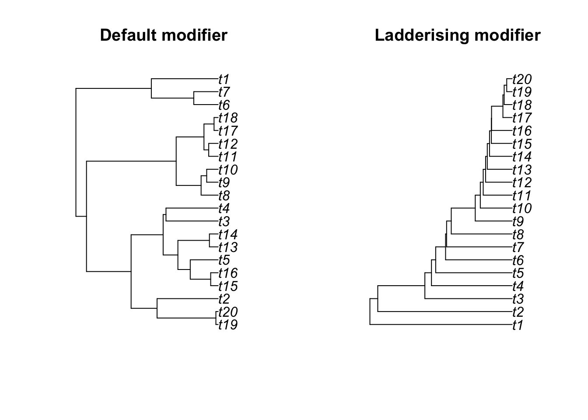
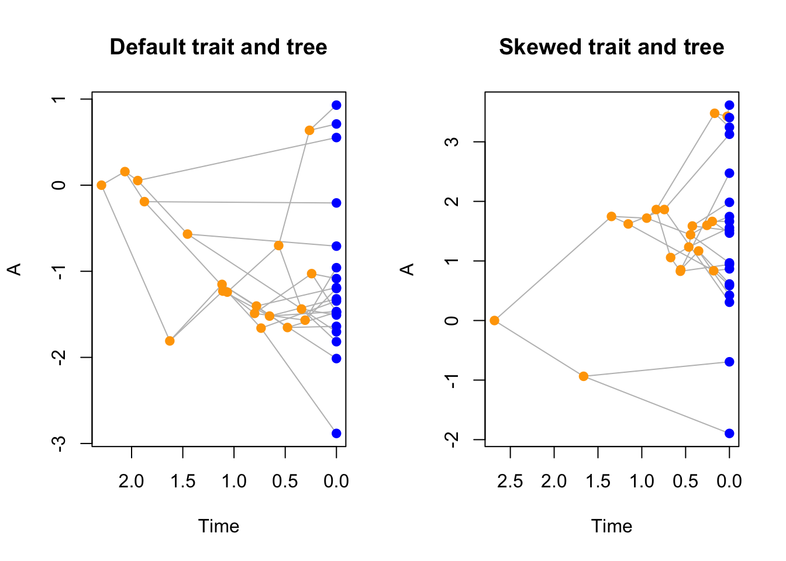
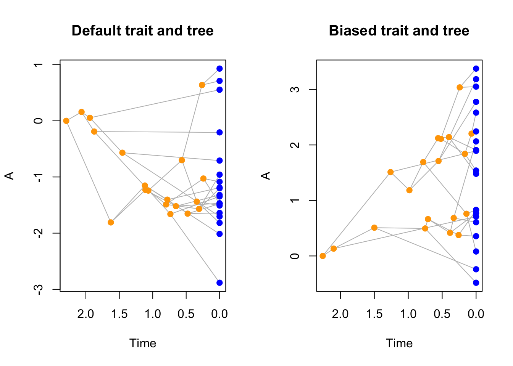

4 Making modifiers with make.modifiers()
"modifiers" have a similar structure than "traits" where you can design an object with increasing complexity, starting with the simplest modifiers that doesn’t modify anything (using the default arguments):
## Making a default modifier (no modification)
my_default_modifiers <- make.modifiers()
my_default_modifiers## ---- dads modifiers object ----
## No modifiers applied to the branch length, selection and speciation processes (default).Similarly to "traits" objects, "modifiers" are also printed by default using print.dads.
You can see details about what’s actually in the object using print.dads(my_default_modifiers, all = TRUE).
However, contrary to "traits", you cannot plot "modifiers".
4.1 The branch length function (branch.length)
The first argument in "modifiers" is the branch length function (branch.length) this is the function that will be executed in dads to generate branch length.
Note that in the dads algorithm, branch length is not generated directly but actually results of the waiting time.
In other words, the branch.length function just affects waiting time for all taxa present at any time in the simulation.
These taxa can then either go extinct (stopping the “growth” of it’s branch length) or survive (continuing the “growth”).
By default, branch length (or waiting or growth) is a randomly drawn number from an exponential distribution with the rate of the number of taxa multiplied by the speciation and extinction rate: \(n \times (\lambda + \mu)\) (where \(n\) is the number of taxa currently present in the simulation, \(\lambda\) and \(\mu\) are respectively the speciation and extinction rates).
This default function is simply called branch.length in dads and can be used as a modifier as follows:
## Specifying the default modifier
default_modifiers <- make.modifiers(branch.length = branch.length)
## Setting some parameters for generating trees
bd_params <- list(extinction = 0)
stope_rule <- list(max.living = 20)
## Generating a tree with the default branch length parameter
set.seed(0)
default_tree <- dads(bd.params = bd_params,
stop.rule = stope_rule,
modifiers = default_modifiers)Of course, the point of the modularity here is that you can provide your own function for generating branch length.
For example, we might be interested in what our tree would look like if we’d use a simple constant branch length generation (instead of randomly drawing it from an exponential distribution).
We can do so by declaring our own branch.length function and adding it to a "modifiers" object.
## A constant branch length generator
## (note that the output must be numeric, not integer)
constant.brlen <- function() {
return(as.numeric(1))
}
## Creating the modifiers object
constant_modifier <- make.modifiers(branch.length = constant.brlen)
## Generating a new tree with this modifier
set.seed(0)
modified_tree <- dads(bd.params = bd_params,
stop.rule = stope_rule,
modifiers = constant_modifier)And we can visualise the difference between both resulting trees:
par(mfrow = c(1,2))
plot(default_tree, main = "Default modifier")
plot(modified_tree, main = "Constant branch length\nmodifier")
It is of course to use more complex branch length modifiers that intakes different conditions and specific modification rather than simply always output a value of one.
4.1.1 The allowed arguments
It is of course possible to design some more advanced function to interact with the birth death process.
You can create a function for branch.length, selection and speciation that involve any of the following arguments:
bd.params: a named list containing"numeric"values that contains the birth death parameters (at least"speciation"and"extinction");lineage: a named list containing the lineage data (see below).trait.values: a"matrix"containing"numeric"values with the trait names as column names and the lineages ID as row numbers (you can use it with the functionparent.traitsto access the trait of the previous node for example).modify.fun: a"list"of named"function"(usually passed throughconditionandmodify).
The lineage list contains the following elements (missing elements are allowed):
lineage$parents: an"integer"vector: the list of parent lineages;lineage$livings: an"integer"vector: the list of lineages still not extinct;lineage$drawn: a single"integer": the ID of the selected lineage;lineage$current: a single"integer": the selected lineage (is equal tolineage$livings[lineage$drawn]);lineage$n: a single"integer": the current number of non extinct lineage (is equal tolength(lineage$livings));lineage$split: a"logical"vector: the list of splits for each lineage (TRUE), the number of total tips is equal tosum(!lineage$split).
In general, unless you know what you’re doing, you can ignore most arguments for specific modifiers since they are handled automatically within the dads function.
Therefore any argument can be left undeclared or missing and is always handled internally. For example, if you did not declare n.taxa as a function argument but are using n.taxa in the function, n.taxa will be detected and treated as a current argument automatically as set accordingly within the birth death process (e.g. n.taxa will be set to the current number of taxa every iteration of the process).
For example, we can create a function that increases branch length proportional to the number of species “alive” at each time of the simulation in a discrete way. I.e. for discrete numbers of taxa, the branch length increases by jumps (ten fold):
## A more complex binned.branch.length function
increasing.brlen <- function(bd.params, lineage) {
## Setting the cumulated birth and death
birth_death <- bd.params$speciation + bd.params$extinction
## Returning branch lengths depending on different number of taxa
if(lineage$n <= 5) {
return(1 * rexp(1, sum(5 * birth_death)))
}
if(lineage$n <= 10) {
return(10 * rexp(1, sum(10 * birth_death)))
}
if(lineage$n <= 15) {
return(100 * rexp(1, sum(15 * birth_death)))
}
if(lineage$n <= 20) {
return(1000 * rexp(1, sum(20 * birth_death)))
} else {
return(1000 * rexp(1, sum(lineage$n * birth_death)))
}
}We can then create it as a "modifiers" object and run a new simulation:
## Creating a modifiers
increasing_modifier <- make.modifiers(branch.length = increasing.brlen)
## Generating a new tree with this modifier
set.seed(0)
increasing_tree <- dads(bd.params = bd_params,
stop.rule = stope_rule,
modifiers = increasing_modifier)And we can visualise the difference between the resulting trees:
4.2 The selection function (selection)
The selection function is used in the birth death process to know which lineage to select when running a speciation (or extinction!) event.
By default, this function randomly selects one taxon that is currently not extinct (using: sample(1:n.taxa, 1)).
Similarly as branch.length it is possible to modify this part of the birth death process.
For example, we could simply select always the last created lineage (to create a “ladder” or most asymmetric tree):
## Our function to always select the last taxon
## (making sure it returns an integer)
select.last <- function(lineage) {
return(as.integer(lineage$n))
}Note that here the function can only intake the allowed arguments as described above (here
n.taxa: the number of current living taxa).
We can then create a "modifiers" object the same way as before using this time the selection argument:
## A modifier for selection
ladderised_modifier <- make.modifiers(selection = select.last)
## Generating a new tree with this modifier
set.seed(0)
ladderised_tree <- dads(bd.params = bd_params,
stop.rule = stope_rule,
modifiers = ladderised_modifier)
## Displaying the results
par(mfrow = c(1,2))
plot(default_tree, main = "Default modifier")
plot(ladderised_tree, main = "Ladderising modifier")
Again, it is of course possible to make the modifier more complex and in combination with other elements of the tree.
For example, we can create a "dads" object that also creates a trait a add to it a selection modifier that only selects for tips with positive trait values.
## Our function that only select taxa with positive trait values
select.positive <- function(trait.values, lineage) {
## Selecting the taxa with positive traits only
positives <- as.integer(rownames(trait.values)[which(trait.values[, 1] >= 0)])
## Select the current taxa that descend from a node with a positive value
positive_living <- cbind(lineage$parents, seq_along(lineage$split)
)[which(lineage$parents %in% positives), 2]
## Select one tip randomly in the ones with descendants with positive values
return(sample(which(lineage$livings %in% positive_living), 1))
}
## Creating the modifier
positive_skew <- make.modifiers(selection = select.positive)
## Creating a (default) trait object
BM_trait <- make.traits()
## Simulate a tree and trait with no modifier
set.seed(1)
default_dads <- dads(bd.params = bd_params,
stop.rule = stope_rule,
traits = BM_trait)
## Simulate a tree and trait with the modifier
set.seed(1)
skewed_trait_dads <- dads(bd.params = bd_params,
stop.rule = stope_rule,
traits = BM_trait,
modifiers = positive_skew)
## Plotting the differences in trees and traits
par(mfrow = c(1, 2))
plot(default_dads, main = "Default trait and tree")
plot(skewed_trait_dads, main = "Skewed trait and tree")
4.3 The speciation function (speciation)
The third function that can be used to modify the birth death process is the speciation function.
This one is used during the birth death process to decide whether a lineages speciates (creating a node and two new lineages) or goes extinct (creating a tip).
Note that the
speciationfunction only affects tips or nodes before the simulation reaches thestop.rule. The then surviving lineages are all automatically transformed into tips.
By default, the speciation function is trigger a speciation even if a number randomly drawn from a uniform distribution is lower than the ratio between the speciation and the speciation and extinction parameter. If the randomly drawn number is higher, the lineage goes extinct.
Creating a "modifiers" with a speciation function works the same way as for branch.length and selection but the function that will be used needs to output a logical value (see table below).
Once the function is created simply input your function for speciation in the modifier and run the dads function with that modifier:
## Speciating or going extinct randomly
## (regardless of the extinction parameter)
random.extinct <- function() {
return(sample(c(TRUE, FALSE), 1))
}
## Creating the modifiers object
random_extinction <- make.modifiers(speciation = random.extinct)
## Generating a new tree with this modifier
set.seed(0)
modified_tree <- dads(bd.params = bd_params,
stop.rule = stope_rule,
modifiers = random_extinction)
par(mfrow = c(1,2))
plot(default_tree, main = "Default modifier")
plot(modified_tree, main = "Random extinction\nmodifier")Note how every lineage end up going extinct!
And again, we can make some more advanced modifiers: for example, one where a tip always goes extinct if their ancestor has a negative trait value (here we will also introduce the utility function parent.trait that automatically selects the trait values of the parent of the current lineage.
## A modifier for removing tips with negative values
bias.trait <- function(trait.values, lineage) {
if(parent.traits(trait.values, lineage) < 0) {
## Go extinct!
return(FALSE)
} else {
## Speciate
return(TRUE)
}
}
## Creating the modifier
biased_trait <- make.modifiers(speciation = bias.trait)
## Simulate a tree and trait with the modifier
set.seed(1)
biased_trait_dads <- dads(bd.params = bd_params,
stop.rule = stope_rule,
traits = BM_trait,
modifiers = biased_trait)
## Plotting the differences in trees and traits
par(mfrow = c(1, 2))
plot(default_dads, main = "Default trait and tree")
plot(biased_trait_dads, main = "Biased trait and tree")
4.4 Summary of the inputs and outputs for the branch.length, selection and speciation modifiers
| modifier name | accepted input (arguments) | required output (class) |
|---|---|---|
branch.length |
bd.params, lineage, trait.values |
"numeric" |
selection |
bd.params, lineage, trait.values |
"integer" |
speciation |
bd.params, lineage, trait.values |
"logical" |
4.5 The condition and modify functions (condition and modify)
In the examples above, we have seen how to specify modifications to the birth death process (via branch.length, selection and speciation), however, one might note that these modifications are not dynamic.
In other words, throughout the process, the modifications remain constant (even if they are conditional).
It is however possible to code the "modifiers" so that they can be affected by "events" objects (see next chapter).
To do so, you can formally declare conditions (condition) and modifications (modify) as internal functions that can then be modified my an "events" object.
condition and modify are hard coded in the branch.length function that they concern, i.e. they are variables (functions) within the function.
4.6 Combining and editing modifiers (add)
4.7 Testing modifiers (test)
4.8 Demo runnable
bd.params <- list(speciation = 1, extinction = 1/3)
traits <- make.traits()
stop.rule <- list(max.taxa = 20, max.living = Inf, max.time = Inf)
modifiers <- NULL
events <- NULL
null.error <- NULL
## modifiers
condition <- function(trait.values, parent.lineage) return(parent.traits(trait.values, parent.lineage) < 0)
modify <- function(x) return(x * 20)
## Setting up the different modifiers
modify_speciation <- make.modifiers(speciation = speciation.trait,
condition = condition,
modify = modify)
modify_brlen <- make.modifiers(branch.length = branch.length.trait,
condition = condition,
modify = modify)
modify_speciation_brlen <- make.modifiers(branch.length = branch.length.trait,
speciation = speciation.trait,
condition = condition,
modify = modify)
## Test normal (no modifiers)
set.seed(1)
test <- dads(bd.params, stop.rule, traits, null.error = 20)
par(mfrow = c(4,2))
plot(test$tree)
plot.dads(test, main = "random tree + trait")
## Test with modifiers
set.seed(1)
trait_table <- NULL
test <- dads(bd.params, stop.rule, traits,
modifiers = modify_speciation,
null.error = 20)
plot(test$tree)
plot.dads(test, main = "Skewed speciation")
set.seed(1)
trait_table <- NULL
test <- dads(bd.params, stop.rule, traits,
modifiers = modify_brlen,
null.error = 20)
plot(test$tree)
plot.dads(test, main = "Skewed branch length")
set.seed(1)
trait_table <- NULL
test <- dads(bd.params, stop.rule, traits,
modifiers = modify_speciation_brlen,
null.error = 20)
plot(test$tree)
plot.dads(test, main = "Skewed branch length and speciation")